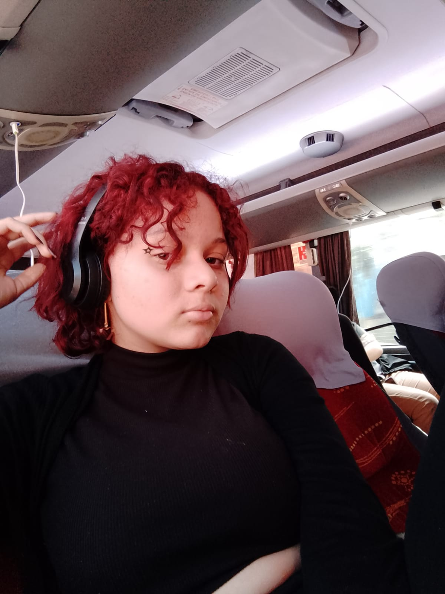
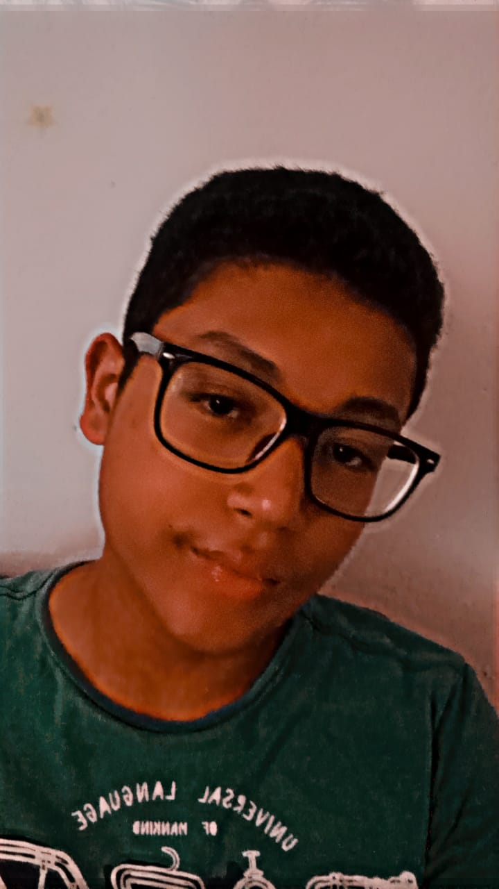
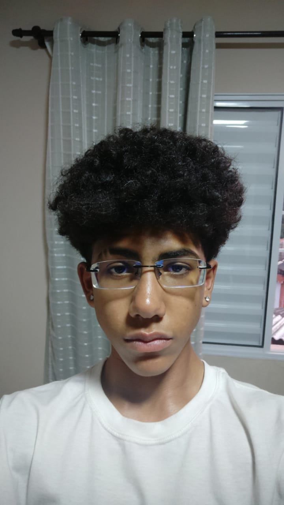

Biografias dos Integrantes

Evellyn Feliciano, uma estudante de 15 anos da Etec MCM, é uma jovem apaixonada por ciência e tecnologia. Ela se destaca por sua participação ativa no projeto do foguete desenvolvido pela equipe de alunos. Sua curiosidade e criatividade a levaram a contribuir para resolver desafios técnicos, melhorando a aerodinâmica e os sistemas de propulsão. Além de suas habilidades técnicas, Evellyn é uma líder inspiradora e colaborativa, motivando seus colegas e compartilhando ideias. Sua dedicação exemplar ao projeto reflete o potencial da próxima geração de cientistas e engenheiros na exploração espacial.
Nome: Evellyn Feliciano
Evellyn Feliciano, uma estudante de 15 anos da Etec MCM, é uma jovem apaixonada por ciência e tecnologia. Ela se destaca por sua participação ativa no projeto do foguete desenvolvido pela equipe de alunos. Sua curiosidade e criatividade a levaram a contribuir para resolver desafios técnicos, melhorando a aerodinâmica e os sistemas de propulsão. Além de suas habilidades técnicas, Evellyn é uma líder inspiradora e colaborativa, motivando seus colegas e compartilhando ideias. Sua dedicação exemplar ao projeto reflete o potencial da próxima geração de cientistas e engenheiros na exploração espacial.

Nome: Gabriel Araujo
Gabriel Araujo Pereira é um jovem de 16 anos apaixonado pelo mundo da tecnologia da informação. Atualmente, ele está cursando Tecnologia da Informação na ETEC Maria Cristina Medeiros, onde está mergulhando fundo no universo da programação, redes e sistemas. Desde cedo, Gabriel demonstrou interesse pela área, e sua dedicação e entusiasmo o tornam um estudante promissor nesse campo em constante evolução. Fora dos estudos, ele gosta de explorar novas tendências tecnológicas e aproveitar seu tempo livre para aprimorar suas habilidades
Nome: Gabriel Caspirro
Função: Engenheiro de Propulsão

Eu sou Guilherme Nakamura Carvalho, um estudante dedicado do ensino médio técnico em T.I. da ETEC Maria Cristina Medeiros em Ribeirão Pires, curioso para explorar o mundo da tecnologia e inovação. Minha jornada envolvendo a tecnologia começou esse ano com pequenos projetos que utilizam a Inteligência Artificial, para a criação de sites e imagens. Além disso, busco sempre me informar sobre coisas relacionadas a essa área, já que não era tão familiarizado com a área da informática em si. Com um olhar voltado para o futuro, desejo continuar meus estudos e meu trabalho para a área de informática, onde poderei investir meu tempo em projetos que ajudem a sociedade atual e futura com idéias inovadoras
Nome: Guilherme Nakamura
Eu sou Guilherme Nakamura Carvalho, um estudante dedicado do ensino médio técnico em T.I. da ETEC Maria Cristina Medeiros em Ribeirão Pires, curioso para explorar o mundo da tecnologia e inovação. Minha jornada envolvendo a tecnologia começou esse ano com pequenos projetos que utilizam a Inteligência Artificial, para a criação de sites e imagens. Além disso, busco sempre me informar sobre coisas relacionadas a essa área, já que não era tão familiarizado com a área da informática em si. Com um olhar voltado para o futuro, desejo continuar meus estudos e meu trabalho para a área de informática, onde poderei investir meu tempo em projetos que ajudem a sociedade atual e futura com idéias inovadoras

Função: Engenheiro de Propulsão
Nome: Iago Menezes
Função: Engenheiro de Propulsão